Product Design
A route to someone real.
We reimagined Contact Us as a clearer path to the right inbox, useful destination, or real person.
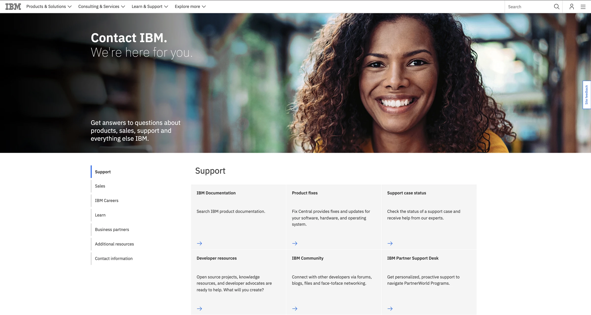
Six weeks to imagine a better front door.
I chose the IBM.com Contact Us experience from the incubator assignments and joined four other designers to propose what its future state could be.
My official role was Visual Designer, but the work crossed disciplines. I conducted several early sponsor-user interviews, helped guide team decisions, and took a larger hand in the mid- and high-fidelity UX as the concept became tangible.
Five-person team · 2021 · six-week concept. This was collaborative work. I helped connect research, interaction decisions, visual direction, prototype, and final story. The future-state concept did not become the production page.
Useful if you already knew IBM.
The old experience did not accomplish much for someone who was new, smaller, or simply unsure where a question belonged.
If you were a primary customer with a representative, you had a shortcut. For someone without an established IBM relationship, the page could become a dead end. The team also saw the receiving-side burden: many categories, poorly differentiated support destinations, and requests that still needed to be sorted by people.
We combined sponsor-user interviews with competitor analysis and Google 360 and IBM internal-search data. The historical playback distilled that work into two practical tensions.
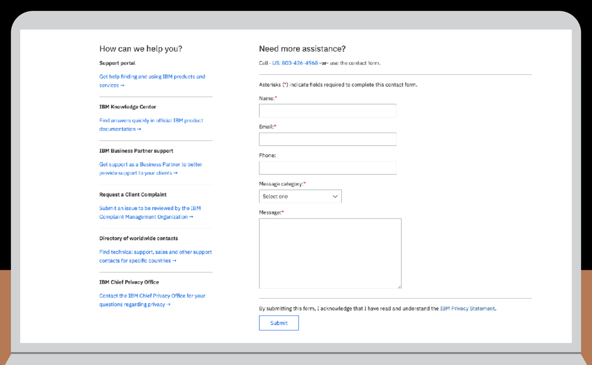
Support overload
Many support destinations lacked a clear distinction, making it easier for inquiries to land with the wrong team.
Inconsistent entry points
Product pages varied in what they offered, while someone seeking help expected a recognizable route from wherever they started.
Make the next destination visible.
We stopped treating Contact Us as one general form and began treating it as a routing experience.
The future state surfaced recognizable choices earlier, then connected each choice to something more useful: self-service information, technical support, sales, another direct route, or assisted contact.
The goal was not to keep someone inside an interface. It was to get them closer to the right inbox or person.
How the routing model took shape.
These preserved states show the team moving from a content-first directory toward grouped choices, direct contact routes, and a visible human fallback.
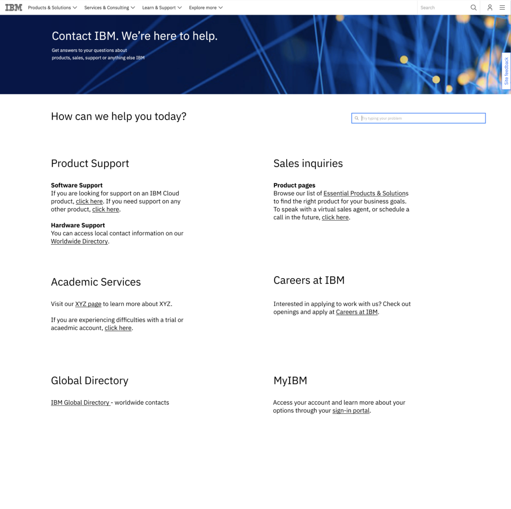
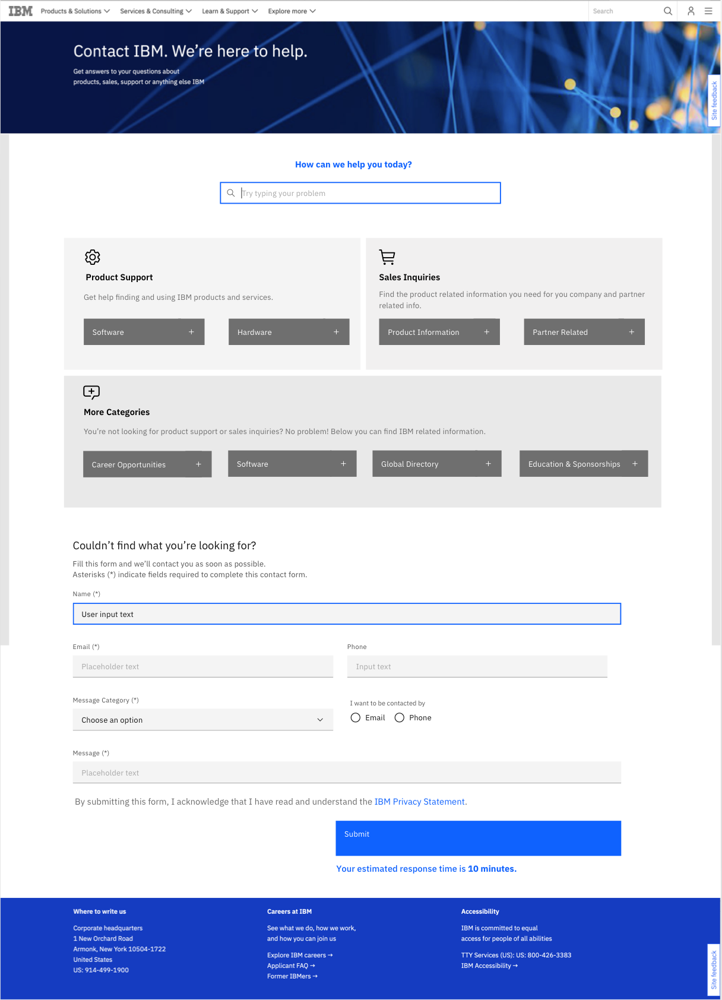
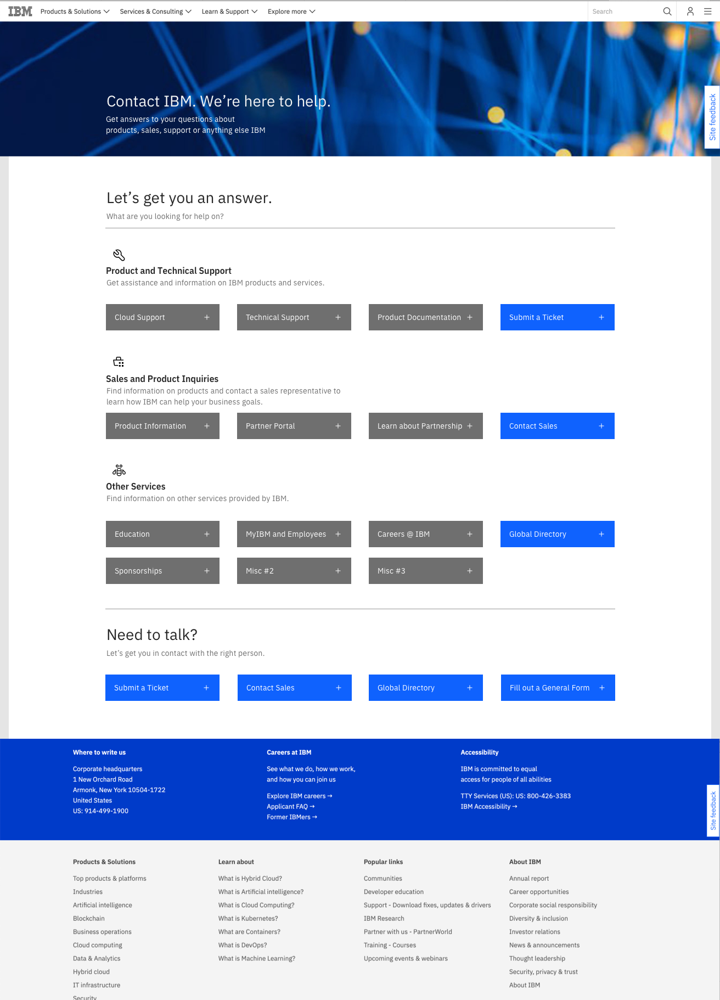
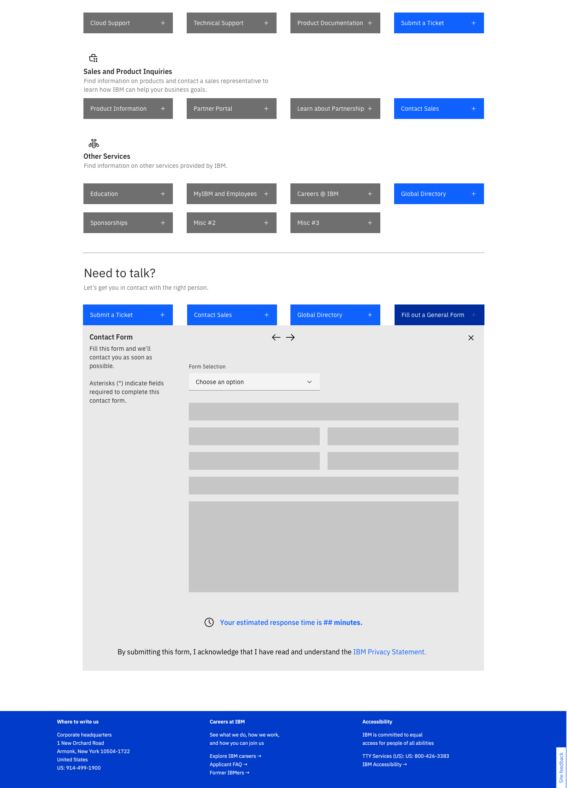
Process provenanceThese team explorations were preserved in a February 23, 2021 playback. They document the concept's evolution. Individual screen ownership is not assigned.
Making the front door feel more human.
I remember the intent as humanizing the front door: warmer language and people-centered imagery, followed by choices that helped someone recognize their situation without understanding IBM's internal structure.
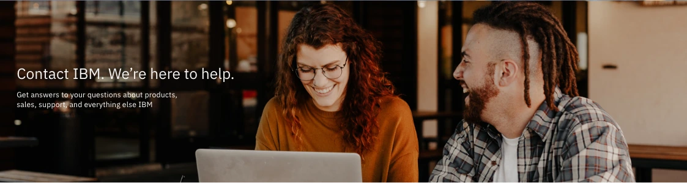
“We're here to help” and “We're here for you” shifted the opening away from organizational language and toward the person arriving.
Support, sales, careers, learning, partners, and general inquiries became visible choices instead of one undifferentiated form.
When self-service did not resolve the need, contact information and assisted routes remained visible.
Humanization rationaleThe visuals are historical artifacts. The language about wanting a warmer, more human experience is my present-day recollection, consistent with the preserved copy and imagery but not documented as a measured research finding.
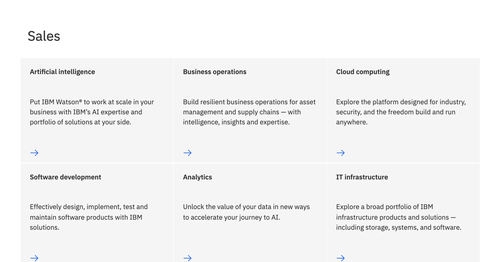
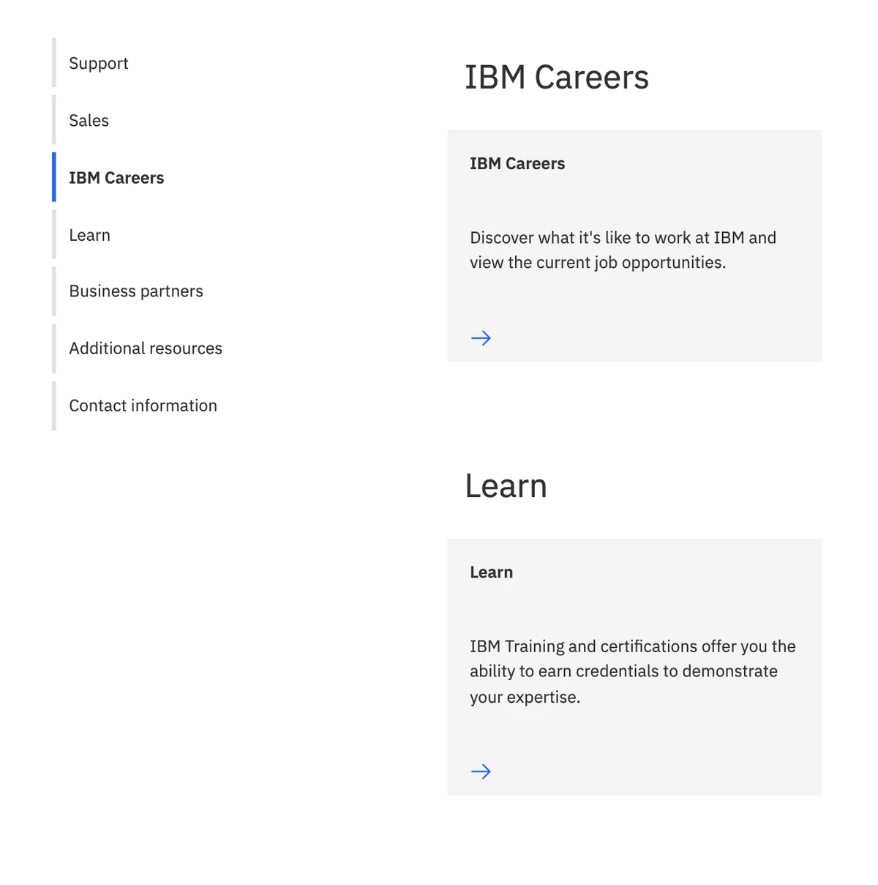
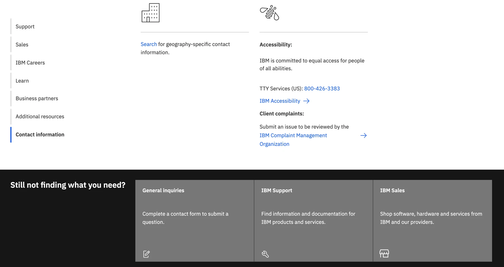
Carry the work beyond the room.
The final presentation turned our research, routing, and interface decisions into a story that people outside the sprint could follow.
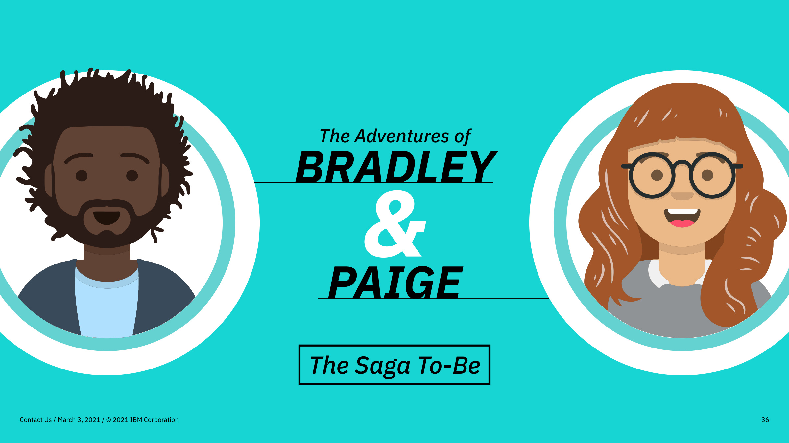
I am still especially proud of the final playback and the way our team made the concept understandable beyond the sprint.
Program feedback recognized my presentation storytelling, the way I helped co-lead the team, and how I connected user needs to research evidence.
Source noteThis paraphrases private program feedback. It does not expose reviewer identities or turn positive reception into measured product validation.
What carried forward.
We shared the future state with the team responsible for the real Contact Us experience. I later recognized parts of its direction in the page.
The useful idea was simple: make the next destination clear and keep a person within reach.
Influence and concept boundaryThis is a bounded first-person recollection. Similarity in later versions does not prove exact lineage, sole authorship, or direct implementation.